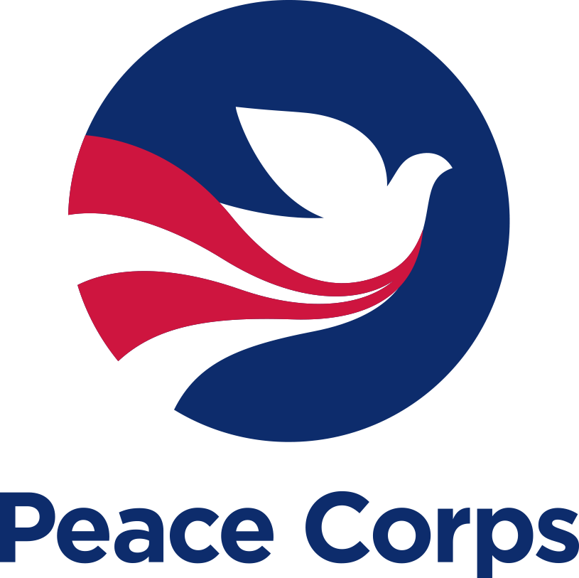
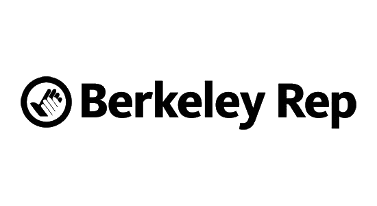

Portfolio

Marketing Page
This project shows the front page of a marketing website meant for a specific business I'm interested in.

Search Page
This project searches through a speficic database to find information that the user is trying to look up.

Travel App
This project compares travel times based on different transportation methods and tells you the best one

Map of Favorite Spots
This project uses mapping apis to plot points for my favorite spots in the city for a do-it-yourself walking tour.

Photo Gallery
This project shows pictures from a recent trip to the viewer and allows them to easily navigate through photos.

Calculator
Someone can enter in the numbers they want, and press the big blue button and get the result.
Experience
My past professional experience has not been limited to purly web development. My most formative positions have ranged in duties and geographies. Feel free to hover over each section to learn more.
-

2008-2009: I worked as a Small Enterprise Development Volunteer with the Kilisa Village Development Community we worked on projects including farming, irrigation infrastructure, medical services, and bussiness consulting.
-

2010-2011: Our team produced subscription sales and donations for the marketing and development efforts of Berkeley Repertory Theater. I was responsible for managing the sales records budget, communications, and team dynamics of the office.
-
2011-Present: Our unit implements the Department of Transportation drug and alcohol testing procedures for public transit employees ast the SFMTA. I managed audit preparation, database management, contractor oversight, test scheduling, training, and process review.
Contact
If you're interested in chatting or want more infomraiton about what I've been working on, I'd love to hear from you!
Phone+1(111)555-1234
Emailemail@yoursite.com